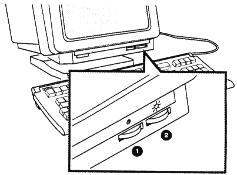

| Chapter 1 | Contents | Chapter 3 |
This chapter provides step-by-step instructions to install your VT420 terminal.
Complete all the steps in order. Then go to Chapter 3 to set up the terminal for operation.
The VT420 lets you run one or two sessions on a host computer system. A session is an active connection to a computer. For example, when you log into a system, you are running a session. The VT420 lets you run two sessions on the same host system or on separate systems.
You need a separate communication cable for each session, unless your system has Digital's Session Support Utility software or a DECserver 200 or DECserver 300 terminal server. If you use SSU software or one of the DECservers, you only need one communication cable to run two sessions. Appendix C shows the communications cables you can use. To order cables, see Appendix B.
This chapter shows you how to install communication cables. Chapter 3 describes how to set up the VT420 for one or two sessions. Chapter 7 describes how to use two sessions.
Unpack and check the contents of each carton.
Make sure you have all the items shown in the following figure. If you have missing or damaged items, contact your sales representative and delivery agent.
Install the tilt-swivel base on the terminal.
 |
Place the terminal on a level surface.
CAUTION: Do not place objects on top of the terminal. They may block the cooling vents, causing the terminal to overheat.
Connect the keyboard to the terminal.
The keyboard cable is already connected to the rear of the keyboard.
If you want the keyboard cable routed to the right or left, press the cable into one of the grooves on the bottom of the keyboard.
Install the legend strip.
Place the legend strip between the main keypad keys and the top-row function keys. Align the strip with the tabs.
NOTE: After you install the VT420, you must select the appropriate keyboard language from the terminal's Set-Up Directory screen. Chapter 3 shows you how to select the keyboard language.
Make sure the power switch is in the off (0) position.
Plug the power cord into the power receptacle on the terminal, then into the wall outlet.
Start up your terminal.
 |
NOTE: If you have problems, see the "Problem Solving" section at the end of this chapter.
Adjust the brightness and contrast controls for your viewing preference.
|  |
Adjust the tilt-swivel base to a comfortable viewing angle.
To set the angle, tilt the terminal forward or backward to the desired position. You can turn the terminal to any viewing position.
CAUTION: The terminal does not swivel in a complete circle. If you try to swivel the terminal in a complete circle, you may damage the base.
Identify the cable connectors.
The next four pages show you how to connect the cable(s) from your host system. Use the following figure to identify the cable connectors.
 |
| Port | Connector | Function | ||
|---|---|---|---|---|
| 1 | Comm2 | 6-pin, DEC-423 | Connects the VT420 to a printer or a secondary host computer, directly or indirectly (through a terminal server). | |
| 2 | Comm1 | 6-pin, DEC-423 | Connects the VT420 to a primary host computer, directly or indirectly (through a terminal server or modem). | |
| 3 | Comm1 | 25-pin, RS-232 | Connects the VT420 to a primary host computer, directly or indirectly (through a terminal server or modem). | |
| 4 | Power | IEC |
Connect your communication cable(s) to the rear of the terminal.
You have three cabling options, based on how many sessions you want to use.
To run one session on the VT420:
 |
IMPORTANT: After you install the VT420, you must set the terminal's operating features to match this cable connection. Chapter 3 shows you what features to set.
Now, go to Chapter 3.
There are two ways you can connect cables to run two sessions over separate communication cables:
Connect an RS-232 cable to the 25-pin Comm1 connector. Use this port to connect to the primary host computer.
Connect a DEC-423 cable to the 6-pin Comm2 connector. Use this
port to connect to the secondary host computer.
or
Connect a DEC-423 cable to the 6-pin Comm2 connector. Use this port to connect to the secondary host computer.
NOTE: You can also use the Comm2 port to connect a printer to the terminal. See Chapter 8.
IMPORTANT: After you install the VT420, you must set the terminal's operating features to match this cable connection. Chapter 3 shows you what features to set.
Now, go to Chapter 3.
Check with your system manager to see if your host system supports SSU software. If your host does not support SSU software or it does not use a DECserver 200 or DECserver 300 terminal server, you need two cables to run two sessions.
There are two ways you can connect a cable to run two sessions when your host has SSU software.
|
IMPORTANT: After you install the VT420, you must set the terminal's operating features to match this cable connection. Chapter 3 shows you what features to set.
You have installed your VT420 successfully. Go to Chapter 3.
If the screen's text is not balanced on the left, right, top, and bottom margins, use the screen align feature in the Set-Up Directory screen (Chapter 5).
| Problem | Suggested Solution |
|---|---|
| The screen is blank. | Turn up the brightness and contrast controls. |
| The screen is blank and the screen saver indicator is on. | The terminal has a CRT saver that turns off the screen display if you do not use the terminal for 30 minutes. Press any key to reactive the screen display. |
| The bell tone does not sound when you turn the terminal on. The keyboard indicator lights do not flash. | Make sure the keyboard is connected to the terminal. |
| Any message other than VT420 OK appears on the screen. | Call your local Digital Customer Services office for assistance. See Chapter 10. |
| The screen's text is not balanced on the left and right, or on the top and bottom. | Align the text by using the screen align feature in the Set-Up Directory screen (Chapter 5). |
| Power to the terminal is lost, and you cannot log into your host system. | When power is restored to the terminal, press the F4 (Session) key first. |